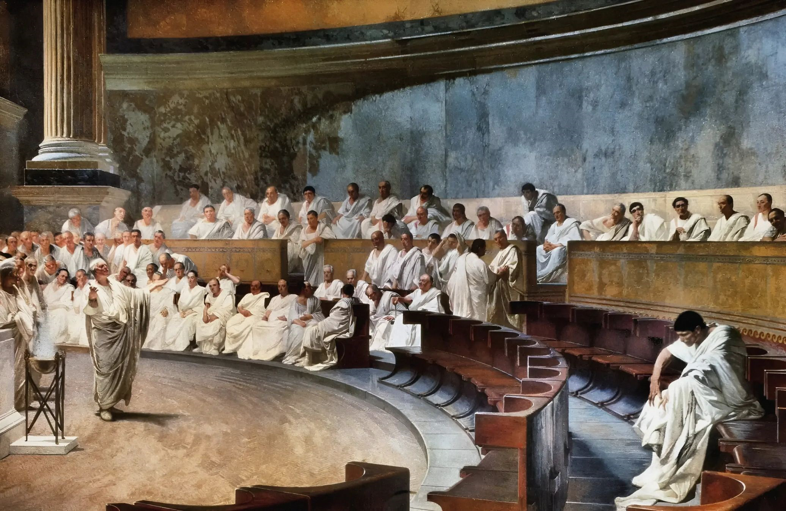

Two thousand years after his assassination, Julius Caesar remains one of the most studied leaders in human history. Military academies, business schools, and political scientists continue to dissect his methods. What made a man from a middling patrician family the most powerful person in the ancient world — and why do his lessons still hold?
"Men willingly believe what they wish to believe."
— Julius Caesar, De Bello GallicoFive Principles Caesar Lived By
The Loyalty of the Legions
Perhaps Caesar's most remarkable asset was not his tactical genius but the fierce devotion of his soldiers. The Tenth Legion, his favourite, followed him from Gaul to Greece to Africa over more than a decade of continuous campaigning. When he finally dismissed them, veterans wept.
This loyalty was cultivated deliberately. Caesar shared his soldiers' hardships — he ate their food, slept in similar conditions, and marched on foot when circumstances demanded. He paid them generously, sometimes from his own fortune. He spoke to them before battles not as a general addressing troops but as a man addressing colleagues.
"It is easier to find men who will volunteer to die than to find those who are willing to endure pain with patience."
— Julius CaesarThe Art of Clemency
Caesar's policy of clementia — mercy toward defeated enemies — was genuinely revolutionary. After the civil war he pardoned Cicero, Brutus, Cassius, and dozens of senators who had fought against him. He appointed many to positions of authority.
Historians debate whether this was genuine magnanimity or calculated politics. Probably both. Caesar understood that dead opponents create martyrs while pardoned ones create obligations. The policy worked — until Brutus and Cassius repaid their pardons with daggers on the Ides of March.
Legacy in the Modern World
Napoleon studied Caesar obsessively. Wellington kept the Commentarii in his field kit. Patton believed he was Caesar reincarnated. Modern business literature regularly invokes Caesar's principles of motivation, communication, and decisiveness. What unifies these admirers is the recognition that Caesar's greatness stemmed from an extraordinary integration of abilities — physical courage, intellectual brilliance, political cunning, and genuine charisma.

Whether one admires or condemns him, Caesar remains an inexhaustible subject. Every time someone says "crossing the Rubicon" or references a ruler as a "Caesar" — in Kaiser, Tsar, or Shah — they are acknowledging a life that still refuses to stay in the past.